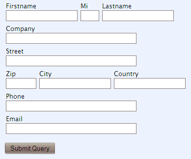

The standard widgets for web forms, TableForm and ListForm, are very simple. If you want to have something more sophisticated, e.g. more than one field per row, then you will need to create your own form widget by subclassing a standard widget, overriding the template and probably adding other parameters.
On this page we are collecting examples and ideas for more sophisticated form classes that you can built upon.
Our first example class is similar to a normal TableForm, but instead of placing every field in a row of its own, allows you to align some fields horizontally, simply by adding the field CSS class ‘aside’ to the field. We have also included some default CSS so that labels appear on top of the fields and the submit button will be separated a bit vertically. You should modify this according to your needs and move this into the site CSS file instead of making it part of the form widget:
from itertools import groupby
from turbogears.widgets import TableForm, CSSSource
class MultiColTableForm(TableForm):
"""TableForm allowing multiple fields per row.
Fields having 'aside' as one of their css_classes appear on the same row.
"""
template = """
<form xmlns:py="http://purl.org/kid/ns#"
name="${name}" action="${action}" method="${method}" class="tableform"
py:attrs="form_attrs">
<div py:for="field in hidden_fields"
py:replace="field(value_for(field), **params_for(field))"/>
<table border="0" cellspacing="0" cellpadding="6"
py:for="row_no, row in rows(fields)" py:attrs="table_attrs">
<tr class="${row_no % 2 and 'odd' or 'even'}"
valign="top"><td py:for="field in row">
<label py:if="field.label" class="fieldlabel"
for="${field.field_id}" py:content="field.label"/>
<span py:replace="field(value_for(field), **params_for(field))"/>
<span py:if="error_for(field)" class="fielderror"
py:content="error_for(field)"/>
<span py:if="field.help_text" class="fieldhelp"
py:content="field.help_text"/>
</td></tr>
</table>
<div class="submit" py:content="submit(submit_text)"/>
</form>
"""
css = [CSSSource("""
form.tableform {
margin-bottom: 1ex;
}
form.tableform td {
vertical-align: top;
}
form.tableform label.fieldlabel {
display: block;
}
form.tableform div.submit {
padding-top: 2ex;
}
""")]
params = ['rows']
@staticmethod
def rows():
"""Return a function for creating the rows."""
def gen_rows(fields):
def row_no(field, no=[0]):
if not 'aside' in field.css_classes:
no[0] += 1
return no[0]
return groupby(fields, row_no)
return gen_rows
The MultiColTableForm class can be used like this:
from turbogears.widgets import WidgetsList, TextField
class MyFields(WidgetsList):
firstname = TextField(attrs=dict(size=20))
mi = TextField(attrs=dict(size=2), css_classes=['aside'])
lastname = TextField(attrs=dict(size=20), css_classes=['aside'])
company = TextField(attrs=dict(size=40))
street = TextField(attrs=dict(size=40))
zip = TextField(attrs=dict(size=6))
city = TextField(attrs=dict(size=20), css_classes=['aside'])
country = TextField(attrs=dict(size=20), css_classes=['aside'])
phone = TextField(attrs=dict(size=40))
email = TextField(attrs=dict(size=40))
form = MultiColTableForm(fields=MyFields())
The resulting form will then have the following layout:
Our second example is different in that it uses only DIVs and CSS instead of tables. Again, the necessary CSS has already been included in the form widget class; modify or include it in the site CSS as appropriate. The trick with overflow:hidden makes sure that we do not mess up parts of the layout depending on floating elements and works also with MSIE:
from itertools import groupby
from turbogears.widgets import Form, CSSSource
class MultiColDivForm(Form):
"""Form using floating divisions allowing multiple fields per row.
Fields having 'aside' as one of their css_classes appear on the same row.
"""
template = """
<form xmlns:py="http://purl.org/kid/ns#"
name="$name" action="$action" method="$method" class="floatform"
py:attrs="form_attrs">
<div py:for="field in hidden_fields"
py:replace="field(value_for(field), **params_for(field))"/>
<div py:for="row_no, row in rows(fields)"
class="${row_no % 2 and 'odd' or 'even'} row">
<div py:for="field in row" class="field">
<label py:if="field.label" class="fieldlabel"
for="${field.field_id}" py:content="field.label"/>
<span py:replace="field(value_for(field), **params_for(field))"/>
<span py:if="error_for(field)" class="fielderror"
py:content="error_for(field)"/>
<span py:if="field.help_text" class="fieldhelp"
py:content="field.help_text"/>
</div>
</div>
<div class="submit row" py:content="submit(submit_text)"/>
</form>
"""
css = [CSSSource("""
form.floatform {
margin-bottom: 1ex;
}
form.floatform div.row {
overflow: hidden;
height: 100%;
margin-top: 1.5ex;
}
form.floatform div.field {
float: left;
margin-right: 1em;
}
form.floatform label.fieldlabel {
display: block;
}
form.floatform div.submit {
margin-top: 3ex;
}
""")]
params = ['rows']
@staticmethod
def rows():
"""Return a function for creating the rows."""
def gen_rows(fields):
def row_no(field, no=[0]):
if not 'aside' in field.css_classes:
no[0] += 1
return no[0]
return groupby(fields, row_no)
return gen_rows
The MultiColDivForm can be used in exactly the same way as the MultiColTableForm and the output will look pretty much the same.